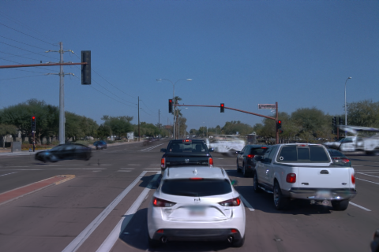
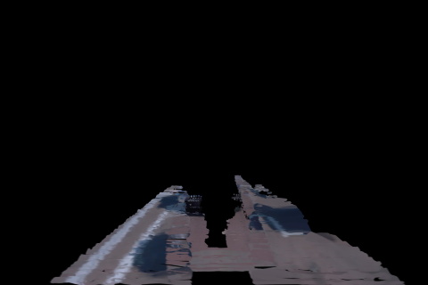
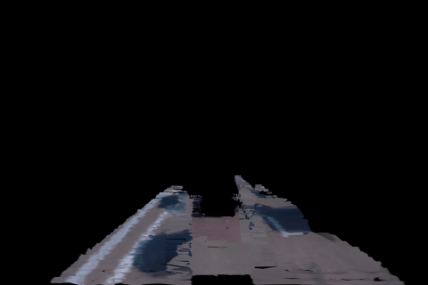
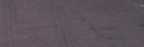
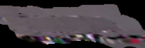
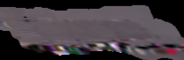

稳定的实例身份
车辆在对象局部坐标系建模，背景和道路位于世界坐标系；在高斯克隆、分裂与剪枝过程中维护实例归属，使对象编辑与表示增密保持一致。
3D GAUSSIAN SPLATTING · AUTONOMOUS DRIVING
融合实车图像、激光雷达与实例轨迹，分解背景、道路和动态车辆，构建支持对象编辑与新视角渲染的三维资产。

各约 200 帧 · 分别完成 30K 重建
道路充分覆盖率 · 基线 86.99%
多视角颜色 MAE · 相同渲染预算
METHOD
对象局部表示与世界道路资产，在同一渲染链路中汇合。
车辆在对象局部坐标系建模，背景和道路位于世界坐标系；在高斯克隆、分裂与剪枝过程中维护实例归属，使对象编辑与表示增密保持一致。
融合跨帧实拍、相似路面检索与冻结的生成补全结果，建立世界坐标下共享的道路外观场；结合 LiDAR 几何与可微渲染，优化覆盖和局部颜色。
将场景构建与编辑查询分离，固定评价区域、采样预算和相机读出；覆盖检查点恢复、资产重载及分区 RGB / Alpha / 深度检查。
RESULTS
针对车辆移除后暴露的路面空洞，在有几何支撑的区域构建补全面，并分阶段优化不透明度、切向尺度与局部颜色。
α > 0.9 的道路像素占比
固定 5 视角 · 38,416 像素评价域


优化后优化前同一相机、同一帧的道路单层渲染。
CONTROLLED EXPERIMENT
共享畸变校正与曝光归一化，将参考池从 2 帧扩展为 8 帧；两组均训练 400 步、每步渲染 2 帧。以下 3 个查询视角未参与本轮 RGB 参数更新。



视角 100 · 颜色 MAE：0.008189 → 0.006780
| 查询视角 | 2 帧监督 | 8 帧监督 | 变化 |
|---|---|---|---|
| 100 | 0.008189 | 0.006780 | −17.21% |
| 110 | 0.008336 | 0.008122 | −2.57% |
| 117 | 0.008325 | 0.008391 | +0.79% |
| 三视角均值 | 0.008283 | 0.007765 | −6.26% |
PROJECT RESOURCES
场景构建、可编辑表示、道路资产与配对评测。